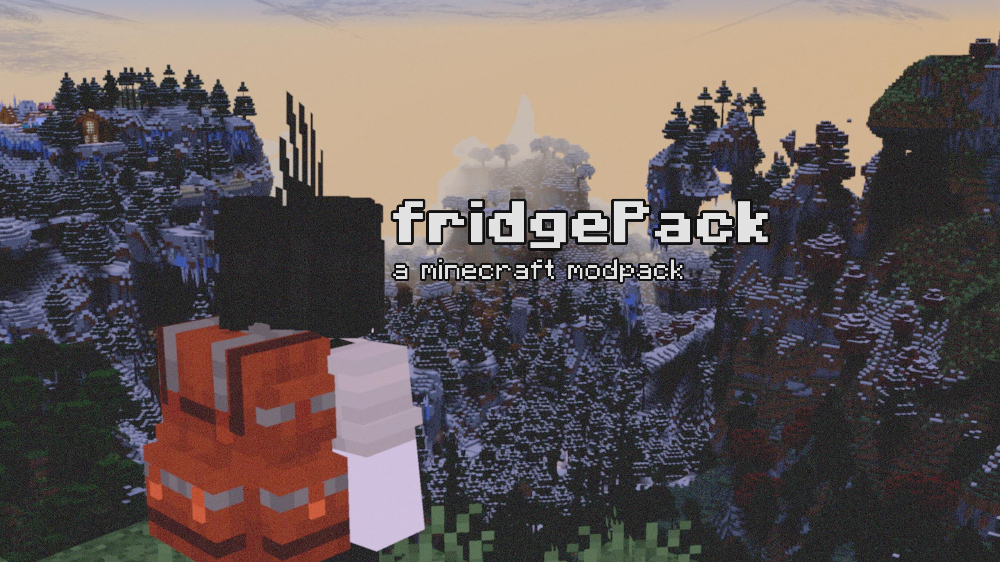
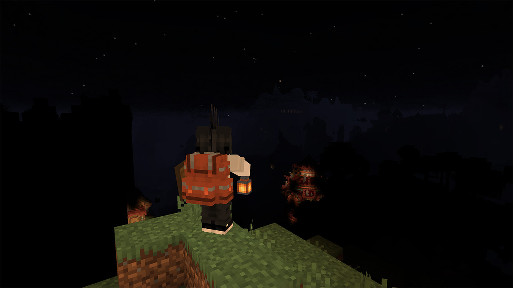
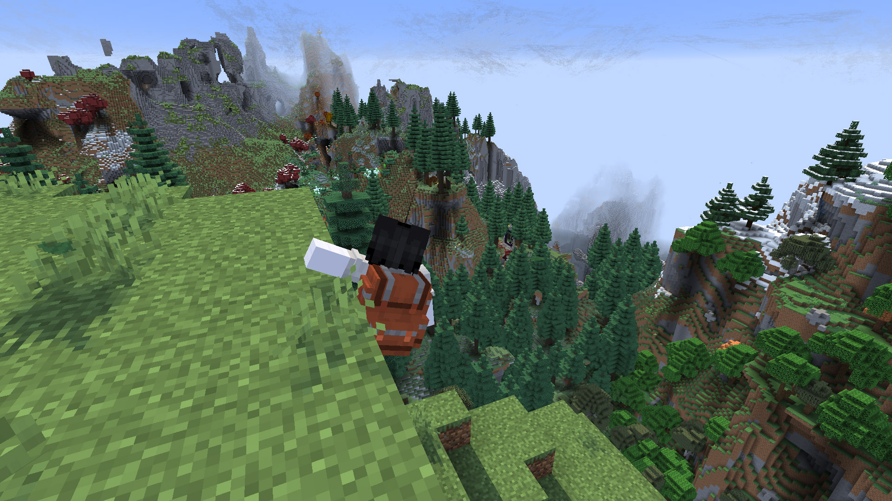
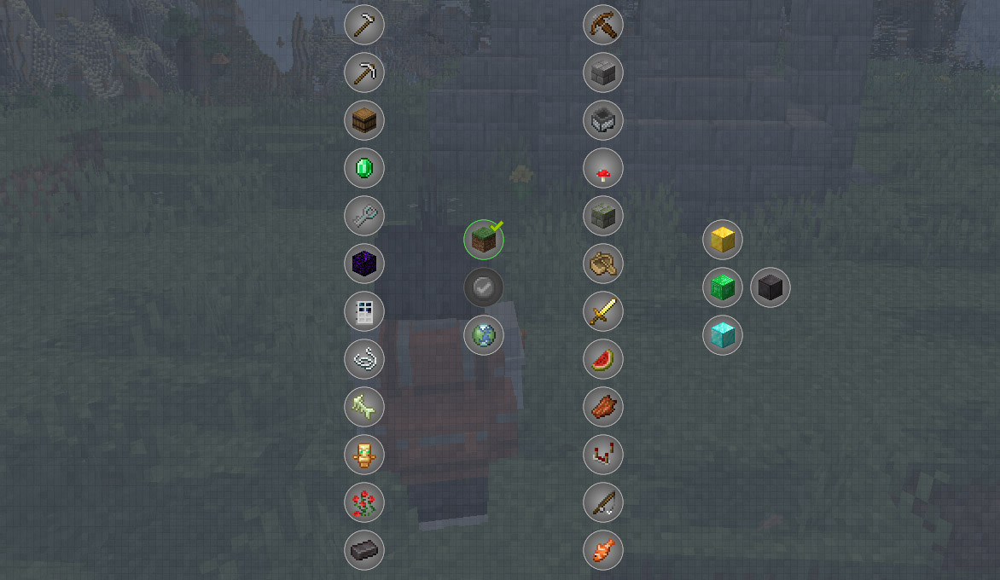
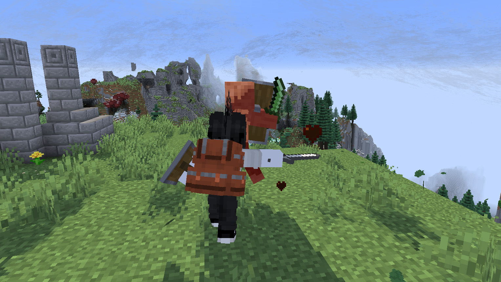

[micro]blog
about
contact
projects
music

Download (Google Drive)
Mod list
fridgePack is a Minecraft modpack focused on survival, exploration, parkour and difficulty.
Navigate through a mountain-packed world filled with new biomes, structures, mobs, items and more.
Getting Started
You'll spawn in the world with a guidebook and a questbook. These will assist you in
basic survival and exploration, but after you've covered the basics, you're free to do what you want!
Nights are pitch black, mobs are more dangerous
(they can climb walls!) and the terrain is amplified, therefore harder to
navigate. Follow the guide to make yourself the basic items you'll need to make your experience easier.

Parkour and Stamina
To make navigation substantially easier, I've added the ParCool mod. You'll
spawn with a book explaining how it works, but basically, you can grab onto ledges and scale walls with ease.
This comes at a cost, however. Performing movement actions drain a stamina bar that'll limit movement
when empty. Ensure to preserve your stamina and don't get caught in a bad situation.

Exploration and Biomes
The world is filled with new biomes, structures and mobs. You'll find new ores, plants, trees and more to make shiny new gear.
The questbook will reward you with random loot for exploring the world, so make sure to keep an eye out for new things.
Rewards can vary from food, to weapons, to armor and more.

Combat and Parrying
The Better Combat and More Shields mods have been added to change how combat works. Your melee weapons will
swing like a real sword, damaging any enemies in the swoop.
You can also parry attacks with a shield if you lift it up right before impact. This will knock the enemy
back, damage them (damage depending on shield type) and give you a chance to counterattack.

Multiplayer
This modpack comes with the Essential mod, which lets you connect to a friend's world without
the need for a dedicated server.
Simply add a friend to your friends list through the Social menu, open your world and invite them!
More information about Essential can be found
here.
Simple Voice Chat is also included, press V in-game for configuration options.
Download
You can download the modpack from Google Drive using the link at the top of the page.
Have fun, and good luck surviving!